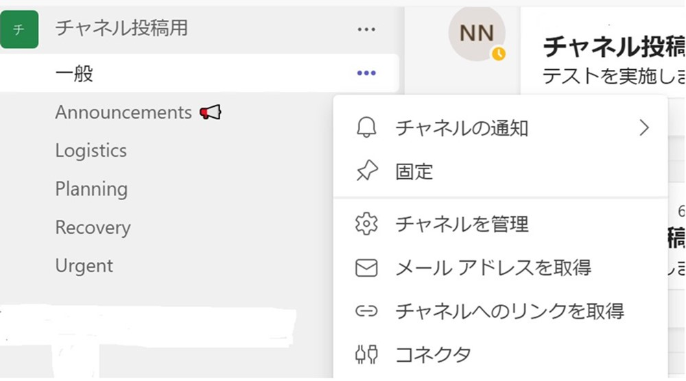
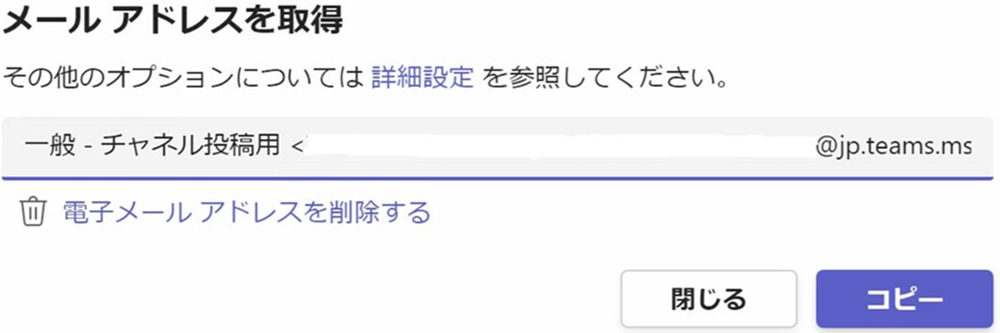

こんにちは。Unified Communications サポート チームです。
いつも Microsoft Teams をご利用いただきありがとうございます。
Microsoft Teams 上への投稿には、特定のチャネルに対するメールによる投稿がサポートされていますが、現在、outlook.com のメールアドレスからチャネルに投稿を試みた場合に、投稿が反映されない状況があることが確認されております。
問題については、すべてのユーザー様や投稿で生じるものではありませんが、Outlook.com からの投稿に際して同様の事象が発生している場合には、本記事をご参照ください。
1. 発生事象について
Outlook.com から Microsoft Teams の チームのチャネルにある [メールアドレスを取得] から取得したメールアドレスへ送信しても投稿できない場合があることを確認しています。
チャネルのメールアドレス取得手順
通常、以下の操作で投稿が実施できますが、この際、Outlook.comからメールを送信した場合に反映されない場合が確認されています。
1.チームのチャネルより、以下にある [メールアドレス取得] をクリックします。

2.以下ウィンドウがポップアップされるので [コピー] ボタンをクリックすることによりメールアドレスがコピーされます。

2. 回避策について
こうした問題は、投稿を受ける側の Microsoft Teams の問題ではなく、 Outlook.com 側のメール処理に起因して生じている可能性も考えられる状況です。
そのため、Microsoft Teams 側での障害情報等がなくメールでチームのチャネルに投稿が反映されない場合は、Outlook.com 以外のメールドメインからの送信をご検討ください。
3. その他
Teams アプリのチームにあるチャネルのメールアドレスに Outlook.com から送信しても投稿できない事象について、その後、メール（Outlook.com）側からの調査、改善の対応を進めておりましたが、現在、事象が解消していることを確認しております。
なお、今回のようにメール側でのフィルタにより、Teams への投稿に影響がある状況は、定期的なセキュリティ設定の変更などでやむなく生じる場合がございます。
そのため、同様の事象を確認された際には、以下、Outlook.com へのお問合せの方法を参考に、弊社までご報告を頂けますと幸いでございます。
Title : Outlook.com サポートへの問い合わせ方法
URL : https://answers.microsoft.com/ja-jp/outlook_com/forum/all/outlookcom/67300474-f7a1-47d5-883e-89ed01824143
NOTE :
- 2022年09月06日に、初版を公開しました。
- 2022年11月16日に、問題の解消について情報を追加で公開しました。
※本情報の内容（添付文書、リンク先などを含む）は、作成日時点でのものであり、予告なく変更される場合があります。